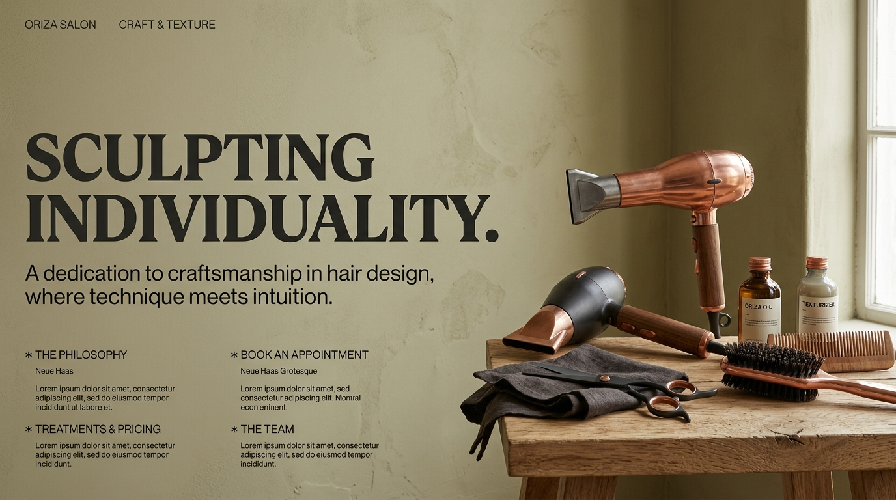
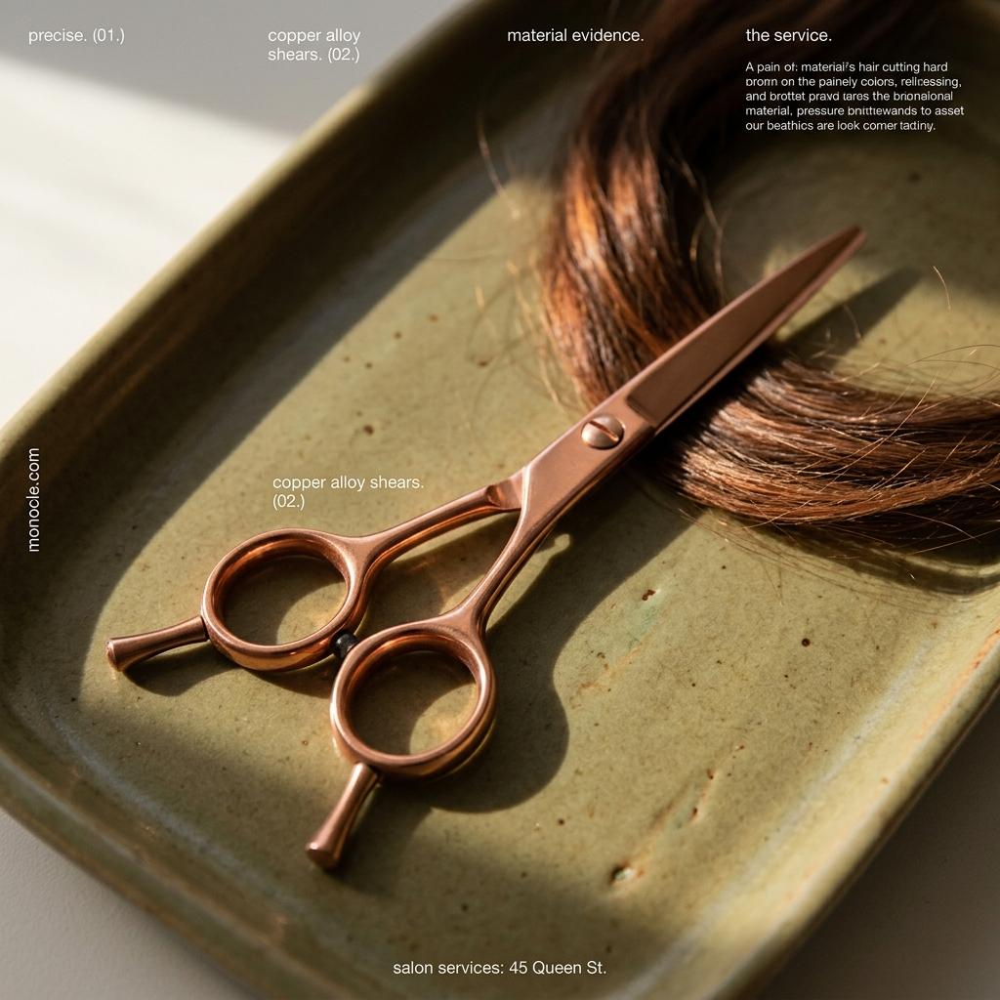
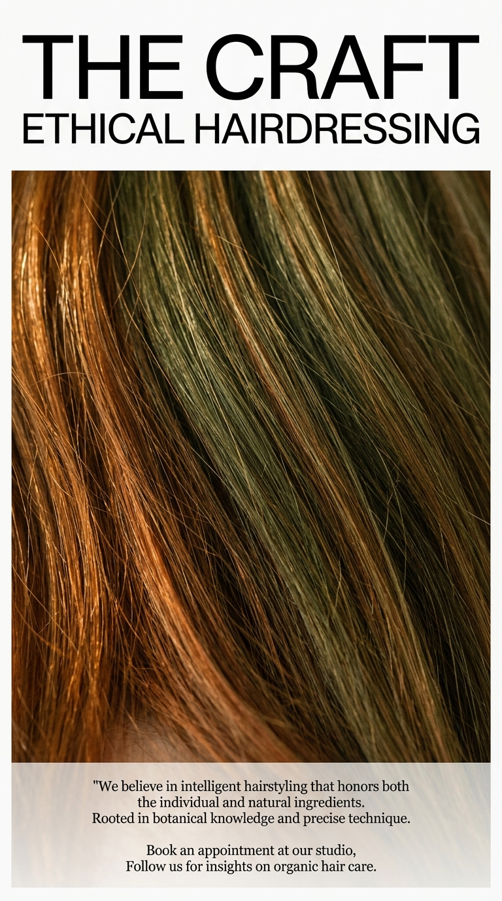

Jede Seite folgt einem anderen Flow-Archetyp. Kein Card-Grid, kein Baukasten, keine harten Sections. Der Unterschied liegt in der räumlichen Logik, nicht in der Farbpalette.

Archetype ADynamischer Links-Rechts-Wechsel. Kein Raster — jedes Element bricht die Achse des vorherigen. Text und Bild tanzen umeinander. Literata als warme Serife.
Seite ansehen →
Archetype DFull-bleed Nahaufnahmen tragen die Seite. Text ist präzise Annotation. Die Fotografie beweist, was Worte nur behaupten. Manrope als klare, reduzierte Stimme.
Seite ansehen →
Archetype BEinspaltig, maximale Weißräume. Typografie ist das Design — eine Full-bleed-Bildunterbrechung als einziges Zugeständnis. Spectral als editoriale Serife.
Seite ansehen →